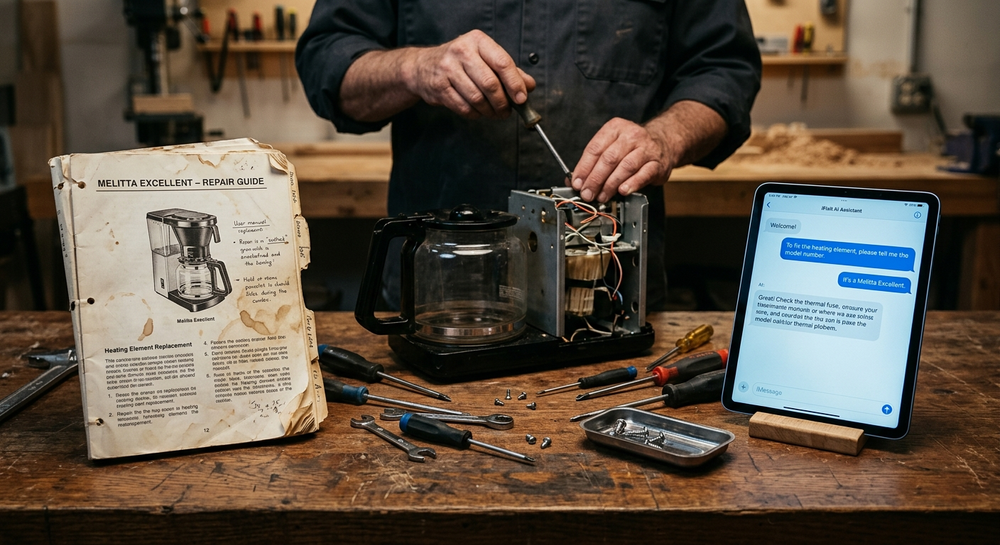

1. The world is drowning in barely-broken stuff
Humans generated a record 62 million tonnes of e-waste in 2022, and the figure is on track to hit 82 Mt by 2030 — only 22.3% is currently formally collected and recycled, leaving roughly US$62 billion of recoverable material in landfill every year. Against that backdrop, a Dutch journalist named Martine Postma started a small, free, walk-in workshop in Amsterdam on 18 October 2009 where neighbours could bring broken kettles and torn jeans for volunteer fixers to mend. Sixteen years later, the Repair Cafe International Foundation counts more than 3,800 active branches across 40+ countries.
This blog is built on RepairMonitor, the Foundation's own logging platform, which volunteers fill in after every visit. The 2026-04-07 TidyTuesday release of that dataset captures 178,749 repair visits, 447 cafes, 25 countries, 1,951 distinct products and 8,600 named brands across 12 years. It is the closest thing the world has to a longitudinal record of community repair.
2. Fix rate: 63% — almost identical to the Foundation's own benchmark
Of the 178,749 logged visits, 112,775 — exactly 63.09% — ended in a successful repair, with 24.1% failed and 12.8% partially fixed. That is one percentage point above the Foundation's 2024 factsheet figure of 62%, and within a point of the Restart Project's Fixometer dataset (~60%). So the headline rate is stable across years, platforms and countries: roughly two out of three things that walk in the door walk out working again.
The dataset is not balanced geographically. The Netherlands alone contributes 50.8% of all rows; the top three countries (NL, GB, FR) together make up 82.9%. Country fix rates vary in a believable band — US 70.9%, GB 65.5%, NL 62.3%, FR 55.6% — but the Dutch tilt means cross-country claims should be made cautiously.
3. What's easy, what's hard: a 70-percentage-point gap
The variation that really matters is not between countries but between categories. Textiles get fixed 92.3% of the time; tools without electronics 90.0%; jewelry 82.9%; bicycles 81.7%. At the other end, the largest single bucket — household electric appliances (70,983 visits) — fixes only 55.3%. Display & sound equipment (TVs, hi-fi, monitors) is the worst major category at 45.8%.
Drill down to individual products and the gap widens to 70 percentage points. With at least 500 visits each, the easiest items to fix are knives and scissors (97.5%), T-shirts (96.2%), trousers (96.0%), pruning shears (95.4%), and dresses (94.7%). The hardest are televisions (29.7%), milk frothers (30.4%), video recorders (31.6%), printers (36.8%), and electric kettles (39.9%). Textile vs electronic. Mechanical vs digital. Repairable-by-design vs not.
4. The movement quadrupled after the pandemic — but the fix rate stayed flat
Annual logged visits rose from 28 in 2015 to 15,491 in 2019, then collapsed during COVID (6,686 in 2020, 5,813 in 2021), then surged: 15,096 in 2022, 29,406 in 2023, 39,981 in 2024, 45,165 in 2025. That is a 4.2x increase between pre-pandemic 2019 and 2025. The fix rate, meanwhile, has hovered in a tight 60-66% band every year since 2017 — a strikingly stable property of the format, even as the underlying volume changed by a factor of four.
This rapid growth coincides with the policy backdrop maturing in real time. The EU adopted its Right to Repair Directive in April 2024, requiring spare parts for up to 10 years and repair info at fair prices. New York's Digital Fair Repair Act has been in force since July 2023; California's SB 244 since July 2024.
5. Why things don't get fixed: spare parts, parts, and parts
Among the 26,537 failed-or-partial visits with a recorded reason, the headline barriers are 'no way to fix the product' (20.9%), 'spare parts not available at the session' (17.7%), 'unidentified failure' (13.8%), 'too worn out' (12.6%) and 'no way to open the product' (8.7%). Combine the three spare-parts buckets — at session, on the market, too expensive — and parts availability accounts for 34.1% of all failure mentions, by far the largest single barrier. This is precisely the lever the EU directive targets.
The pattern is sharper still in specific categories: spare-parts mentions account for 17.8% of failed electrical tools and 16.4% of failed household electrics, but under 1% of textile failures. Volunteers' subjective 1-10 'repairability' score tracks outcome almost monotonically (13.7% fixed at score 1, 85.8% at score 10), which is partly a retrospective rationalisation but also a clean signal that reachability of internals predicts outcome.
6. Median item is 8 years old; brand fix rates span 50+ points
Where the production year is recorded (36% of rows), the median estimated year of production is 2014 — meaning the typical brought-in item is 8 years old at repair, with a mean of 13.8 years. Counterintuitively, fix rate inches up with age: 0–4 year-olds 59.5%, 50+ year-olds 63.4%. Old things tend to be mechanical things; new things tend to be screen-based electronics.
Brand-level numbers tell the same story from a manufacturer angle. Among brands with 300+ visits, the worst fix rates are Canon 34.1%, LG 35.3%, Bose 36.3%, JVC 39.2%, Nespresso 41.9%, Samsung 42.5%; the best are bicycle and sewing brands (Batavus 86.5%, Gazelle 83.6%, Pfaff 73.8%, Singer 67.3%). Philips, the largest named brand at 10,649 visits, sits at 54.4%.
7. Is GenAI replacing YouTube as the repair info source? Not yet — but it's no longer zero
TidyTuesday's prompt asked an open question: is GenAI overtaking YouTube as the go-to source of repair information for fixers? The free-text repair_info_source and repair_info_url fields contain only 7,191 non-null entries (4% of the dataset), but within them YouTube dominates with 879 mentions, followed by manufacturer manuals (385), Google search (279), iFixit (112) and forums (64). GenAI tools (ChatGPT, Gemini, Claude, Copilot, Perplexity, Bing Chat) appear 32 times in total.

The growth curve is unmistakable: 0 mentions before 2023, then 3 in 2023, 10 in 2024, 17 in 2025, and 2 in early 2026. Sample entries — "chat gpt", "WWW.OPENai.COM", "Datasheet internet et chatgpt", "AI Perplexity" — read like a small ethnography of new tools entering an old practice.
But the answer to the original question is clearly no, not yet: in 2025 YouTube was mentioned 239 times to GenAI's 17, a 14-to-1 ratio. The replacement story will become true some day; the data say it is not true today.
The cumulative impact is real. The number is small in planetary terms and large in neighbourhood terms; both readings are correct.